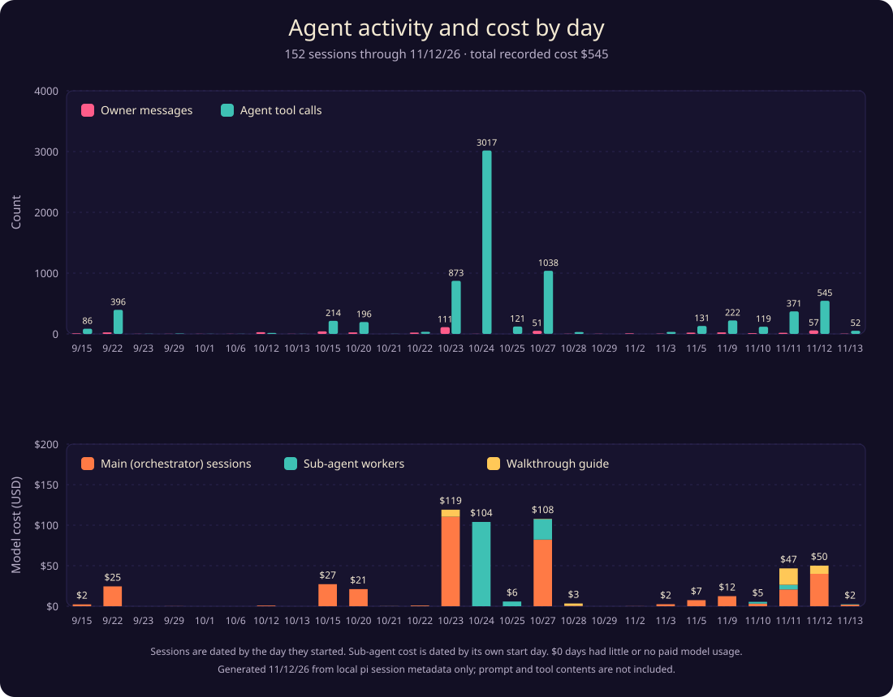
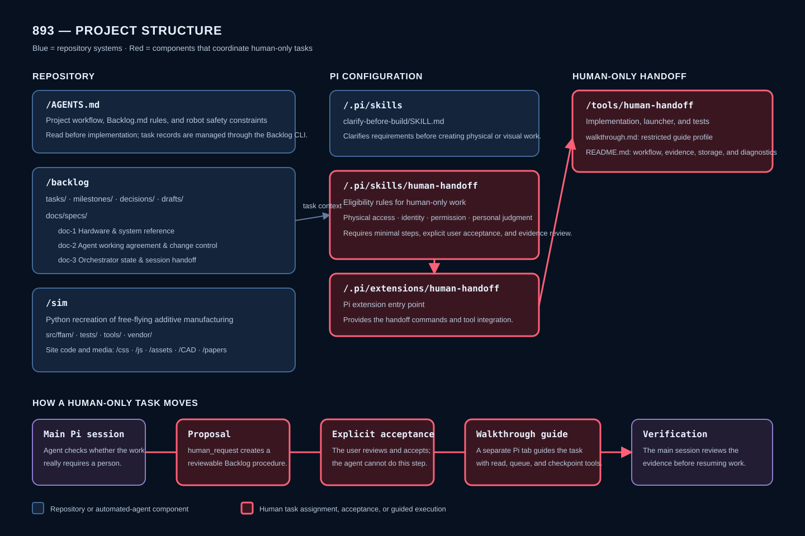

Where the inchworm robot stands, what is finished, and dated notes on
building it with AI agents. New here? Read the
Project page first.
01
Project at a glance
Overall progress
69%of 245 milestone acceptance criteria met
15 tasks done
14 in progress
7 to do
Software exists for every subsystem and is covered by 1,792 automated tests. Both real arms have now run the full crawl cycle without the tube. Most remaining criteria need the tube, the DexArm or the cameras on the real robot.
Phases
Sep — Website, agent skills, paper simulation
Mid Oct — Robot designed, ordered and built
Late Oct — Robot software planned and written by agents
Early Nov — Arms rebuilt; model checked against reality with an animation
Now — Full crawl cycle runs on the real arms, without the tube
Next — Learned insertion, then full autonomous print-crawl
Milestones
M0Foundations ✓Package, device naming, camera bandwidth rule, logging
4/4 tasks 25/25 criteria
M1Hardware bring-upDrive the arms, DexArm and cameras from code
M4Crawl cycleMove the real tube; recover from faults
1/2 tasks 7/14 criteria
M5Laser auto-levelingScan the part and correct the print frame
1/5 tasks 24/36 criteria
M6Autonomy & validationMulti-cycle print-crawl loop and acceptance test
1/3 tasks 7/22 criteria
Done
In progress
To do
Current blocker
No blocker. The full cycle and the touching fold both ran on the real arms. The next hardware step is my choice of what to test next, in a supervised session.
Up next
I pick the next step from the list below
Supervised first DexArm move against the robot model
Measure how repeatable the DexArm is AA-13
Calibrate the scanner camera with the chessboard AA-30
Home and map the leader arm AA-44
Already safe in software
Collision checks against the full robot model before every move
Laser forced off on every exit path
Only one camera streams at a time
02
What's finished, in plain English
Every completed task, with what it does and why it matters. The small grey tags are the task IDs used in the repository.
M0 Foundations 4 of 4
One home for all robot code: a single package and one config file describing the hardware, so no task invents its own numbers. AA-4
Each device always has the same name: the two arms can never be mixed up after a reboot, which could drive one into the chassis. AA-5AA-37
One camera at a time: all cameras share one USB 2.0 link, so code enforces that only one streams. AA-6
A flight recorder: every run leaves a log, so an unattended failure can be diagnosed afterwards. AA-7
M1 Hardware bring-up 3 of 8
Talking to the arm servos: a driver for the SO-101 servo bus and a map of which servo is which joint. AA-8
Talking to the DexArm: a driver for its G-code dialect that handles its quirks and reconnects safely. AA-12
Reading the cameras: capture from the mono cameras, skipping damaged frames instead of stopping the run. AA-14
M2 Geometry & coarse motion 4 of 8
A map of where everything is: the chassis stays still and the tube moves, so every attachment point is tracked as the tube advances. AA-15
Safe handover between code and AI: scripted motion hands control to the learned policy only inside strict limits, and always takes it back. AA-20
A gripper lock that holds: the gripper turns to a fixed 45° position to lock onto an attachment point, checked by eye on both arms. AA-17
The whole crawl cycle as an animation: both arms carry and regrip the tube on the robot model, so mistakes show up in pictures before the real arms move. AA-45
M3–M6 Insertion, crawl, leveling, autonomy 4 of 16
Robot-learning toolkit installed: LeRobot set up and connected to the SO-101 arms for recording demonstrations and training. AA-22
Recovering from bad cycles: detects a missed insertion, a latch that won't hold or a shifted tube, and gets back to a safe state. AA-28
Applying the leveling correction: the measured tilt and height of the part shift the DexArm's print frame before every section. AA-33
From slicer to printer: a DexArm profile in Cura, and checks that every sliced file stays inside the safe workspace. AA-34
Model checks & real-arm tests 7 of 12
A robot model I can trust: the collision model was compared with the real arms at the fold and marked verified. AA-40
Powered wrists and grippers: the encoder-only servos were replaced, calibrated, and every first powered move was watched and confirmed. AA-43AA-48
True joint zeros: shoulder and elbow zeros measured from physical landmarks, so the model’s poses match the real arms. AA-47
Gripper lock checked on the real arms: repeated lock trials on both arms, all inside the expected band. AA-49
The full cycle on the real arms: both arms replay the animated cycle together, smoothly, at animation speed, without the tube. AA-50
Touching fold: at the printing pose each lower arm rests on its own shoulder, with the elbow torque capped. AA-52
Website & agent workflow 3 of 3
Interactive 3D CAD viewer of the real robot on this site, self-hosted so it works offline. AA-1AA-3
Human-only task handoffs: when a step needs my hands or judgment, the agent writes a checked procedure and a separate tab guides me through it. AA-2
03
Agent activity & cost
Daily totals from every saved pi session for this project: my messages, agent tool calls and model cost, split into main sessions, sub-agent workers and the walkthrough guide. How the agents were organised is on the Project page.

04
Dated entries
Newest first. “Work done” is a plain summary; “Notes” are my own words, unedited.
Hardware
From animation to a full cycle on the real arms
An animation of the whole crawl cycle showed where the model was wrong; after fixing it, both real arms ran the full cycle smoothly.
Work done
Animation of the full crawl cycle on my cell model. It showed where the model and the real robot disagreed (the joint zero offsets and the fold pose). Both were fixed from landmark measurements, and the model’s bounds now match the robot well.AA-45
Shoulder and elbow zero landmarks measured on both arms.AA-47
Mesh collision model verified against the real fold.AA-40
New wrist servos calibrated, every powered move checked by me, and the 45° gripper position lock verified on both arms.AA-43AA-48AA-49
Whole cycle replayed live on both real arms, without the tube, moving smoothly at animation speed. After I confirm, the whole path is checked once in advance, and single bogus sensor readings are logged instead of aborting the run.AA-50
Touching fold: each lower arm now rests on its own shoulder at the printing pose, with elbow torque capped at 15%. It worked on the first supervised live run, at the start and end of the full cycle.AA-52
Notes
Have become much better at managing context and keeping cost down. Should look into making it a bit more automated.
Might have implemented too many checks. Progress is greatly slowed because of how many checks there are and how "safely" things are done. Could get more done taking more risk. For example, we don't need to abort because the servos get a sensor reading that was slightly too hot for one reading and then goes back to stable temperature.
Animation has worked really well at quickly identifying misunderstanding between reality and the current robot. Bounds are now matching well.
Another interesting thing is Claude considered the fact that I'm frustrated in weighing the validity of my wishes for less safety lol
Hardware
Rebuilt arms and checking the model against reality
Both arms now have powered servos on every joint; the first supervised move matched the model’s picture, not just its words.
Work done
Arms rebuilt with powered STS3215 servos on every joint; all 12 servos checked: right firmware, no errors, normal temperatures.AA-43
Wrists and grippers set up on both arms: homed, swept through their range, and joint limits written and read back.AA-43
First supervised powered move: the left wrist moved ±5°, and I confirmed its direction against the model render. New tools draw the model’s predicted motion as images (view_joint_move.py, view_zero_pose.py).AA-43
Leader arm for teaching: a separate encoder-only arm is connected and scanned, for recording demonstrations by hand; its homing software is ready.AA-44
Scanner calibration prepared: the live calibration path fixed and a printable chessboard generated.AA-30
Damaged camera frames skipped instead of stopping a run.AA-14
Notes
Had issues with agents and orchestrator getting stuck in loops. Agent activity now runs with a time limit. Was having a hard time verifying that the agent knows what's happening with the physical model. It'll say one things in text but that doesn't necessarily match what's physically happening. As such, I've realized I can't necessarily trust the text output and instead need to examine the png it creates for the expected behavior. Considering creating an end to end animation of the robot's movement to confirm behavior as well.
Hardware
Core contribution
My part is the systems thinking and the physical model; the plan now checks the robot against that model.
Work done
Real vs. modelled motion check added to the plan: on the first supervised moves, where the robot actually goes is compared with where the model predicted.AA-40
Notes
My core contribution to this project is the systems levels thinking about how things must work and building the descriptions and models of the what the physical system looks like and how it moves. I don't exactly know how to check that the code truly understands the system correctly and may only discover that in the process of trial and error. Right now I have that trial and error written in as a step where I'll compare actual robot movements with what it thought happened.
Hardware
Teaching AI the physical robot
Agents only understood the robot once I hand-built a clean robot model; the “broken” servos turned out to have no motors.
Work done
Hand-built URDF (a robot description file) of the whole cell: both arms with custom grippers and cameras, the DexArm with its laser camera, the base and the tube. It replaces raw CAD, whose duplicate part names confused the agents.
Collision checking: before any move, code checks the planned pose against this model and refuses if parts would touch. The DexArm check uses the arm's own firmware maths.AA-40
Servo mystery solved: wrist and gripper servos on both arms are encoder-only leader servos. Swap and recalibration planned.AA-43
Notes
Big lesson this week was that making AI understand something physical in real life is not easy. Especially when a model is as complicated as this is with 3 different robotic arms with many many parts, it has a hard time distinguishing things. I did not make it easier since alot of the parts in my model are named the same thing. Burned quite a bit of money on that mistake. Instead of just giving it the CAD, I ended up creating a urdf myself to give the agents. This made things much more understandable for it. I also realized I need more of one kind of the servo before I can complete everything and will need to rebuild the arms so that's fun. Went on a goose chase trying to figure that out, as well. Thought I had fried something but turned out they were dummy servos with just encoders so you could use them as a leader arm.
Planning
Planning the robot software
The whole robot was broken into 33 tasks with measurable pass/fail criteria before any code was written.
Work done
Described the system to the agent: two SO-101 arms gripping attachment points 183.7 mm apart, a DexArm with print head and laser, a fixed chassis and a moving tube.
33 tasks, 7 milestones, 227 acceptance criteria.
Order matters: the crawl cycle can't be tested until learned insertion works, and DexArm repeatability is measured before laser calibration so arm error isn't mistaken for optical error.
Evidence rule: a criterion counts as done only with test output or a measurement, so agents can't quietly rewrite requirements to match what they built.
Getting the walkthrough tab to open took four separate fixes.
Notes
No notes for this entry.
Agent workflow
Human-only task handoffs
When only I can do a step, the agent must justify it and hand me a checklist with checks and stop points.
Work done
Justify or automate: the agent may only ask me for things needing physical access, my identity, permission or judgment, and keeps those to a minimum.
Checklists I accept: each request is a Backlog procedure with actions, expected results, how to verify, and when to stop.
One guide tab walks me through accepted tasks one at a time and reports the evidence back to the main agent.
Notes
No notes for this entry.
Project structure map
This map shows the repository systems that support the robot project. Components that create, accept, or guide human-only tasks are highlighted in red; general repository and agent components are blue.

Hardware
Robot hardware development
The physical robot was designed, ordered and assembled; work now moves from hardware to software.
Work done
Built the robot: chose parts, designed, ordered and assembled it, using my own Claude for component selection and trade-offs.
Added the CAD to the repository, with the interactive viewer below.
Notes
Thus far, I've been using my own personal AI to do a lot of the component selection, tradeoff management, and planning for my robot. I have now chosen parts, designed, ordered, and assembled the entire robot. Part of the reason for using my own personal AI was to prevent muddying up Pi context and because a lot of my descriptions of the idea were already in Claude. I understand this means you can't monitor my AI use which makes it look like I haven't been doing much. At this point, it is about the time when I will be switching from hardware development to software development and plan to integrate AI much more heavily outside of just component selection, tradeoff management, and planning using parley. I have included the CAD of the current system in the repo.
Current robot CAD: drag to rotate, scroll or pinch to zoom.Download STEP
Simulation
Recreating a paper’s simulation from scratch
A published free-flying 3D-printer simulation rebuilt in Python matches 16 of 16 reported numbers.
Work done
Rebuilt the simulation from Jonckers et al. (2022), “Additive Manufacturing of Large Structures Using Free-Flying Satellites”. Full write-up on the Simulation page.
Questions first: asking before building kept the scope right: no full arm kinematics, a planar 3 DoF model like the paper's, and nozzle friction clearly labelled as calibrated.
Found issues in the paper: the arm direction needed to match the reported error split, and one equation appears transposed. Both documented, not silently fixed.
Property-based tests caught one wrong test and one real bug (the print was centred on the wrong point, cancelling a 400 mm lever arm).
Notes
This project was super interesting. I don't believe the AI actually ever finished its thinking. It ran out of space twice. After that, I checked what it had written up to that point and it seemed complete but I think there is a good chance it would have continued working. I ulitmately decided not to try and let it finish because this project broke the $20 dollar mark in terms of tokens already. I think such stringent requirements in my prompt forced the AI to do alot more iterations than might have been totally necessary. Besides the AI, I noticed some of my own bias creeping in as a manager. This session most definitely ended in a cost overrun and technically the session wasn't even finished yet. This is partially because I found myself in a sunk cost fallacy. Since I couldn't actually know how much more progress there was to complete, I kept assuming that it was only a little bit more until eventaully I had spent $20.
Agent workflow
Added a “clarify before build” skill
The agent must ask about style, scope and success criteria before building anything visual or physical.
Work done
Custom skill.pi/skills/clarify-before-build: ask clarifying questions, restate the plan, and wait for a go-ahead before writing code.
Why: a question is the cheapest place to catch a mismatch; a finished but wrong build is the most expensive.
Notes
No notes for this entry.
Website
Getting the animation right
First site and animation built from a written prompt; the AI needed coaching to fix physical motion.
Work done
Built the site and its truss-crawling robot animation (the one on the home page) from a written prompt.
Added this dev log with the session activity chart.
Notes
Found that Claude struggled taking the prompt and making something physical (the animation) using just words. It clearly understood what I wanted but need extra coaching about what was wrong to recognize and fix the mistakes. Either that or it was simply taking shortcuts. I also feel as though I'm not using the terminal in the best way. I'd like an easier way to add files and share information with the model.